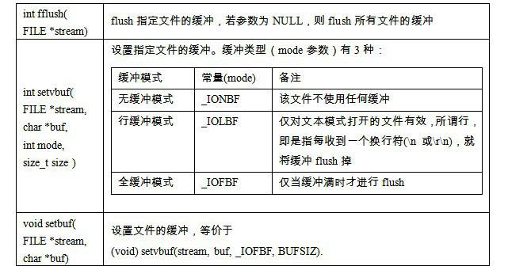
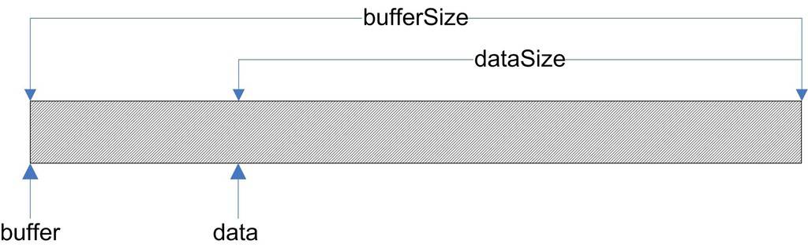
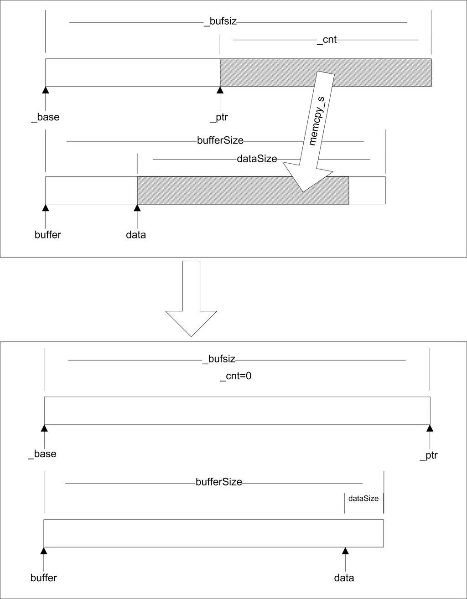
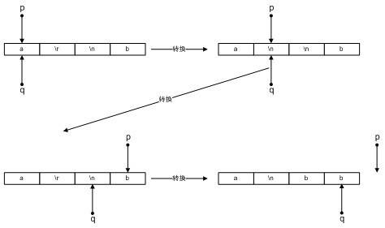
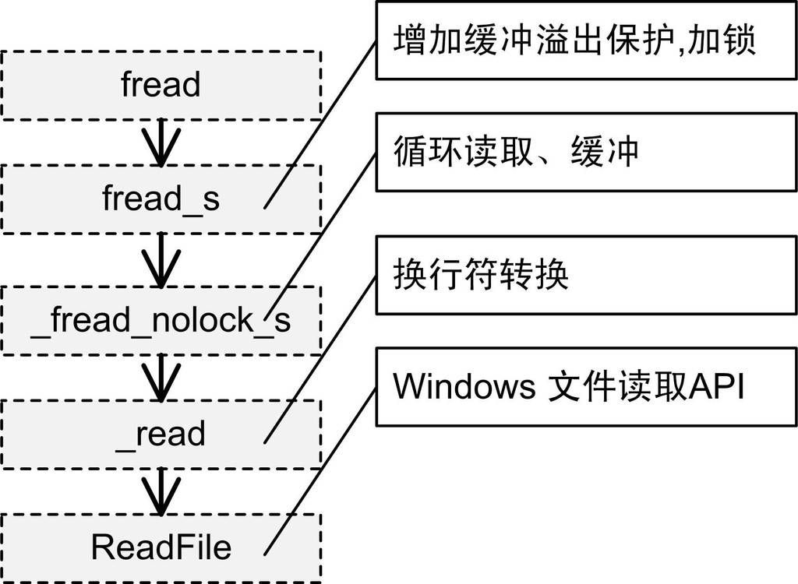

11.5 fread實現
我們知道C語言的執行庫十分龐大，前面介紹的啟動部分、多執行緒、全域性構造和析構這些內容其實都不是佔CRT篇幅最大的部分。與任何系統級別的軟體一樣，真正複雜的並且有挑戰性的往往是軟體與外部通訊的部分，即IO部分。
前面的章節中對執行庫的分析都是比較粗略的，雖然涉及執行庫的各個方面，但是在執行庫實現的深度上挖掘得不夠。我們知道，IO部分實際上是執行庫中最為重要也最為複雜的部分之一，在結束本章之前，最後來仔細瞭解C語言標準庫中一個非常重要的IO函式fread的具體實現，我們知道fread最終是透過Windows的系統API： ReadFile()來實現對檔案的讀取的，但是從fread到ReadFile之間究竟發生了什麼卻是一個未知的迷。我們希望透過對fread()的挖掘，能夠打通從執行庫函式fread到Windows系統API的ReadFile()函式之間的這條通路，這有助於對執行庫和IO的進一步瞭解。
前面的章節中對執行庫的分析都是比較粗略的，雖然涉及執行庫的各個方面，但是在執行庫實現的深度上挖掘得不夠。我們知道，IO部分實際上是執行庫中最為重要也最為複雜的部分之一，在結束本章之前，最後來仔細瞭解C語言標準庫中一個非常重要的IO函式fread的具體實現，我們知道fread最終是透過Windows的系統API： ReadFile()來實現對檔案的讀取的，但是從fread到ReadFile之間究竟發生了什麼卻是一個未知的迷。我們希望透過對fread()的挖掘，能夠打通從執行庫函式fread到Windows系統API的ReadFile()函式之間的這條通路，這有助於對執行庫和IO的進一步瞭解。
首先我們來看fread的函式宣告：
size_t fread(
void *buffer,
size_t elementSize,
size_t count,
FILE *stream
)
在這裡，size_t是表示資料大小的型別，定義為unsigned int。fread有4個引數，其功能是嚐試從檔案流stream裡讀取count個大小為elementSize個位元組的資料，儲存在buffer裡，返回實際讀取的位元組數。
ReadFile的函式宣告為：
BOOL ReadFile( HANDLE hFile, LPVOID lpBuffer, DWORD nNumberOfBytesToRead, LPDWORD lpNumberOfBytesRead, LPOVERLAPPED lpOverlapped );
ReadFile的第一個引數hFile為所要讀取的檔案控制代碼，我們在本章的第一節就已經介紹了控制代碼的概念及討論了為什麼要使用控制代碼的原因，與它對應的應該是fread裡面的stream引數；第二個引數lpBuffer是讀取檔案內容的緩衝區，相對應的fread引數為buffer；第三個引數nNumberOfBytesToRead為要讀取多少位元組，fread與它相對應的應該是兩個引數的乘積，即elementSize * count；第四個引數lpNumberOfBytesRead為一個指向DWORD型別的指標，它用於返回讀取了多少個位元組；最後一個引數是沒用的，可以忽略它。
在瞭解了fread函式和ReadFile函式之後，可以發現它們在功能上看似完全相同，而且在引數上幾乎一一對應，所以如果我們要實現一個最簡單的fread，就是直接呼叫ReadFile而不做任何處理：
size_t fread(
void *buffer,
size_t elementSize,
size_t count,
FILE *stream
) {
DWORD bytesRead = 0;
BOOL ret = ReadFile(
stream->_file // FILE結構的文件句柄
, buffer
, elementSize * count
, &bytesRead
, NULL
);
if(ret)
return bytesRead;
else
return -1;
}
可能很多人會覺得很奇怪，既然fread可以這麼簡單地實現，為什麼CRT還要做得這麼複雜呢？先別著急，我們接下來就慢慢來看CRT是怎麼實現fread的，為什麼它要這麼做。
11.5.1 緩衝
對於glibc，fread的實現過於複雜，因此我們這裡選擇MSVC的fread實現。但在閱讀fread的程式碼之前，首先要介紹一下緩衝（Buffer）的概念。
緩衝最為常見於IO系統中，設想一下，當希望向螢幕輸出資料的時候，由於程式邏輯的關係，可能要多次呼叫printf函式，並且每次寫入的資料只有幾個字元，如果每次寫資料都要進行一次系統呼叫，讓核心向螢幕寫資料，就明顯過於低效了，因為系統呼叫的開銷是很大的，它要進行上下文切換、核心引數檢查、複製等，如果頻繁進行系統呼叫，將會嚴重影響程式和系統的效能。
一個顯而易見的可行方案是將對控制台連續的多次寫入放在一個陣列裡，等到陣列被填滿之後再一次性完成系統呼叫寫入，實際上這就是緩衝最基本的想法。當讀檔案的時候，緩衝同樣存在。我們可以在CRT中為檔案建立一個緩衝，當要讀取資料的時候，首先看看這個檔案的緩衝裡有沒有資料，如果有資料就直接從緩衝中取。如果緩衝是空的，那麼CRT就透過作業系統一次性讀取檔案一塊較大的內容填充緩衝。這樣，如果每次讀取檔案都是一些尺寸很小的資料，那麼這些讀取操作大多都直接從緩衝中獲得，可以避免大量的實際檔案訪問。
除了讀檔案有緩衝以外，寫檔案也存在著同樣的情況，而且寫檔案比讀檔案要更加複雜，因為當我們透過fwrite向檔案寫入一段資料時，此時這些資料不一定被真正地寫入到檔案中，而是有可能還存在於檔案的寫緩衝裡面，那麼此時如果系統崩潰或程式意外退出時，有可能導致資料丟失，於是CRT還提供了一係列與緩衝相關的操作用於彌補緩衝所帶來的問題。C語言標準庫提供與緩衝相關的幾個基本函式，如表11-4所示。

所謂flush一個緩衝，是指對寫緩衝而言，將緩衝內的資料全部寫入實際的檔案，並將緩衝清空，這樣可以保證檔案處於最新的狀態。之所以需要flush，是因為寫緩衝使得檔案處於一種不同步的狀態，邏輯上一些資料已經寫入了檔案，但實際上這些資料仍然在緩衝中，如果此時程式意外地退出（發生異常或斷電等），那麼緩衝裡的資料將沒有機會寫入檔案。flush可以在一定程度上避免這樣的情況發生。
在這個表中我們還能看到C語言支援兩種緩衝，即行緩衝（Line Buffer）和全緩衝（Full Buffer）。全緩衝是經典的緩衝形式，除了使用者手動呼叫fflush外，僅當緩衝滿的時候，緩衝才會被自動flush掉。而行緩衝則比較特殊，這種緩衝僅用於文字檔案，在輸入輸出遇到一個換行符時，緩衝就會被自動flush，因此叫行緩衝。
11.5.2 fread_s
在了解了緩衝的大致內容之後，讓我們回到fread的代碼分析。MSVC的fread的定義在crt/fread.c裏，實際內容隻有一行：
size_t _fread_nolock(
void *buffer,
size_t elementSize,
size_t count,
FILE *stream
)
{
return fread_s(buffer, SIZE_MAX, elementSize
, count, stream);
}
可見fread將所有的工作都轉交給了_fread_ s。fread_s定義如下：
fread -> fread_s:
size_t __cdecl fread_s(
void *buffer,
size_t bufferSize,
size_t elementSize,
size_t count,
FILE *stream
)
{
……
_lock_str(stream);
retval = _fread_nolock_s(
buffer
, bufferSize
, elementSize
, count
, stream);
_unlock_str(stream);
return retval;
}
fread_s的引數比fread多一個bufferSize，這個引數用於指定引數buffer的大小。在fread中，這個引數直接被定義為SIZE_MAX，即size_t的最大值，表明fread不關心這個引數。而使用者在使用fread_s時就可以指定這個引數，以達到防止越界的目的（fread_s的s是safe的意思）。fread_s首先對各個引數檢查，然後使用_lock_str對檔案進行加鎖，以防止多個執行緒同時讀取檔案而導致緩衝區不一致。我們可以看到fread_s其實又把工作交給了_fread_nolock_s。
fread_nolock_s是進行實際工作的函式，為了便於理解，下面會分段列出fread_nolock_s的實現，並且將省去所有的引數檢查和錯誤檢查。同樣，還將省去64位部分的程式碼。
fread -> fread_s -> _fread_nolock_s:
size_t __cdecl _fread_nolock_s(
void *buffer,
size_t bufferSize,
size_t elementSize,
size_t num,
FILE *stream
)
{
char *data;
size_t dataSize;
size_t total;
size_t count;
unsigned streambufsize;
unsigned nbytes;
unsigned nread;
int c;
data = buffer;
dataSize = bufferSize;
count = total = elementSize * num;
這一段是fread_nolock_s的初始化部分。在它的區域性變數中，data將始終指向buffer中尚未被寫入的起始部分。在最開始的時候，data指向buffer的開頭。dataSize記錄了buffer中還可以寫入的位元組數，理論上，data + dataSize = buffer + bufferSize。如圖11-12所示。

total變數記錄了總共需要讀取的位元組數，count則記錄在讀取過程中尚未讀的位元組數。streambufsize記錄了檔案緩衝的大小。剩下的3個區域性變數在程式碼的分析過程中會一一提到。在這裡需要特別提一下緩衝在FILE結構中的具體實現。
在對緩衝的概念有了一定了解之後，可分析一下檔案型別FILE結構的定義了。FILE的定義位於stdio.h裡：
struct _iobuf {
char *_ptr;
int _cnt;
char *_base;
int _flag;
int _file;
int _charbuf;
int _bufsiz;
char *_tmpfname;
};
typedef struct _iobuf FILE;
在這裡，_base欄位指向一個字元陣列，即這個檔案的緩衝，而_bufsiz記錄著這個緩衝的大小。_ptr和fread_nolock_s的區域性變數data一樣，指向buffer中第一個未讀的位元組，而_cnt記錄剩餘未讀位元組的個數。_flag記錄了FILE結構所代表的開啟檔案的一些屬性，目前我們感興趣的是3個標誌：
#define _IOYOURBUF 0x0100 #define _IOMYBUF 0x0008 #define _IONBF 0x0004
在這裡，_IOYOURBUF代表這個檔案使用使用者透過setbuf提供的buffer，_IOMYBUF代表這個檔案使用內部的緩衝，而_IONBF代表這個檔案使用一個單位元組的緩衝，即緩衝大小僅為1個位元組。這個緩衝就是_charbuf變數。此時，_base變數的值是無效的。接下來繼續看fread_nolock_s的程式碼：
if (anybuf(stream))
{
streambufsize = stream->_bufsiz;
}
else
{
streambufsize = _INTERNAL_BUFSIZ;
}
anybuf函式的定義位於file2.h：
#define anybuf(s) \ ((s)->_flag & (_IOMYBUF|_IONBF|_IOYOURBUF))
事實上anybuf並不是函式，而是一個宏，它僅檢查這個FILE結構的_flag變數裡有沒有前面提到的3個標誌位的任意一個，如果這3個標誌位在_flag中存在任意一個，就說明這個檔案使用了緩衝。
這一段程式碼對streambufsize變數進行了賦值，如果檔案自己有buffer，那麼streambufsize就等於這個buffer的大小；如果檔案沒有使用buffer，那麼fread_nolock_s就會使用一個內部的buffer，這個buffer的大小固定為_INTERNAL_BUFSIZ，即4096位元組。接下來fread_nolock_s是一個迴圈：
while (count != 0) {
read data
decrease count
}
迴圈體內的操作用偽程式碼表示，大致的意思是：每一次迴圈都從檔案中讀取一部分資料，並且相應地減少count（還記得嗎，count代表還沒有讀取的位元組數）。當讀取資料時，根據檔案是否使用buffer及讀取資料的多少分為3種情況，下面我們一一來看：
if (anybuf(stream) && stream->_cnt != 0)
{
nbytes = (count < stream->_cnt) ? count : stream->_cnt;
memcpy_s(data, dataSize, stream->_ptr, nbytes);
count -= nbytes;
stream->_cnt -= nbytes;
stream->_ptr += nbytes;
data += nbytes;
dataSize -= nbytes;
}
在if的判斷句中，anybuf判斷檔案是否有緩衝，而stream->_cnt != 0判斷緩衝是否為空。因此當且僅當檔案有緩衝且不為空時，這段程式碼才會執行。
讓我們一行一行地來看這段程式碼的作用。nbytes代表這次要從緩衝中讀取多少位元組。在這裡，nbytes等於還需要讀取的位元組數（count）與緩衝剩餘的位元組數（stream->_cnt）中較小的一個。
接下來的一行使用memcpy_s將檔案stream裡_ptr所指向的緩衝內容複製到data指向的位置，如圖11-13所示。

接下來的5行，皆是按照圖11-13修正FILE結構和區域性變數的各種資料。
memcpy_s是memcpy的安全版本，相對於原始的memcpy版本，memcpy_s接受一個額外的引數記錄輸出緩衝區的大小，以防止越界，其餘的功能和memcpy相同。
以上程式碼處理了檔案緩衝不為空的情況，而如果緩衝為空，那麼又分為兩種情況：
（1）需要讀取的資料大於緩衝的尺寸。
（2）需要讀取的資料不大於緩衝的尺寸。
對於情況（1），fread將試圖一次性讀取盡可能多的整數個緩衝的資料直接進入輸出的陣列中，如果緩衝尺寸為0，則直接將剩下的資料一次性讀取。程式碼如下：
else if (count >= bufsize) {
nbytes = ( bufsize ? (unsigned)(count - count % bufsize) :
(unsigned)count );
nread = _read(_fileno(stream), data, nbytes);
if (nread == 0) {
stream->_flag |= _IOEOF;
return (total - count) / size;
}
else if (nread == (unsigned)-1) {
stream->_flag |= _IOERR;
return (total - count) / size;
}
count -= nread;
data += nread;
}
在程式碼中，_read函式用於真正從檔案讀取資料。在這裡我們先不管這個函式，在稍後的內容中會對此函式進行詳細的介紹。如果要讀取的資料不大於緩衝的尺寸，那麼僅需要重新填充緩衝即可：
else {
if ((c = _filbuf(stream)) == EOF) {
return (total - count) / size;
}
*data++ = (char) c;
--count;
bufsize = stream->_bufsiz;
}
_filbuf函式負責填充緩衝。該函式的具體實現重要的部分只有一行：
stream->_cnt = _read(_fileno(stream), stream->_base, stream->_bufsiz);
可以看見所有的線索都指向了_read函式。_read函式主要負責兩件事:
（1）從檔案中讀取資料。
（2）對文字模式開啟的檔案，轉換回車符。
11.5.4 _read
_read的程式碼位於crt/src/read.c。在省略了一部分無關緊要的程式碼之後，其內容如下：
fread -> fread_s -> _fread_nolock_s -> _read:
int __cdecl _read (int fh, void *buf, unsigned cnt)
{
int bytes_read; /* number of bytes read */
char *buffer; /* buffer to read to */
int os_read; /* bytes read on OS call */
char *p, *q; /* pointers into buffer */
char peekchr; /* peek-ahead character */
ULONG filepos; /* file position after seek */
ULONG dosretval; /* o.s. return value */
bytes_read = 0; /* nothing read yet */
buffer = buf;
這部分是_read函式的引數、區域性變數和初始化部分。下面的程式碼處理一個單位元組緩衝：
if ((_osfile(fh) & (FPIPE|FDEV)) && _pipech(fh) != LF)
{
*buffer++ = _pipech(fh);
++bytes_read;
--cnt;
_pipech(fh) = LF;
}
if中的判斷語句使得這段程式碼僅對裝置和管道檔案有效。對於裝置和管道檔案，ioinfo結構提供了一個單位元組緩衝pipech欄位用於處理一些特殊情況。宏_pipech返回這一欄位：
#define _pipech(i) ( _pioinfo(i)->pipech )
pipech欄位的值等於LF（即字元\n）的時候表明該緩衝無效，這樣設計的原因是pipech的用途導致它永遠不會被賦值為LF。我們將在稍後的部分裡詳細討論這一話題。
_read函式在每次讀取管道和裝置資料的時候必須先檢查pipech，以免漏掉一個位元組。在處理完這個單位元組緩衝之後，接下來的內容是實際的檔案讀取部分：
if ( !ReadFile( (HANDLE)_osfhnd(fh), buffer, cnt, (LPDWORD)&os_read, NULL ) )
{
if ( (dosretval = GetLastError()) ==
ERROR_ACCESS_DENIED )
{
errno = EBADF;
_doserrno = dosretval;
return -1;
}
else if ( dosretval == ERROR_BROKEN_PIPE )
{
return 0;
}
else
{
_dosmaperr(dosretval);
return -1;
}
}
ReadFile是一個Windows API函式，由Windows系統提供，作用和_read類似，用於從檔案裡讀取資料。在這裡我們可以看到ReadFile接管了_read的第一個職責。在ReadFile返回之後，_read要檢查其返回值。值得注意的是，Windows使用的函式返回值系統和crt使用的返回值系統是不同的，例如Windows使用ERROR_INVALID_PARAMETER(87)表示無效的引數，而CRT則用EBADF(9) 表示相同的資訊。因此當ReadFile返回了錯誤資訊之後，_read要把這個資訊翻譯為crt所使用的版本。_dosmaperr就是做這件工作的函式。在這裡就不詳細說明瞭。
11.5.5 文字換行
接下來_read要為以文字模式開啟的檔案轉換回車符。在Windows的文字檔案中，回車（換行）的儲存方式是0x0D（用CR表示），0x0A（用LF表示）這兩個位元組，以C語言字串表示則是“\r\n”。而在其他的一些作業系統中，回車的表示卻有區別。例如：
Linux/Unix：回車用\n表示。
Mac OS：回車用\r表示。
Windows：回車用\r\n表示。
而在C語言中，回車始終用\n來表示，因此在以文字模式讀取檔案的時候，不同的作業系統需要將各自的回車符表示轉換為C語言的形式。也就是：
Linux/Unix：不做改變。
Mac OS：每遇到\r就將其改為\n。
Windows：將\r\n改為\n。
由於我們所閱讀的是Windows的crt程式碼，所以_read會每遇到一個\r\n就將其改為\n。由於_read處理這一部分的程式碼很複雜（有近百行），因此這裡會提供一個簡化的版本來閱讀：
if (_osfile(fh) & FTEXT)
{
if ( (os_read != 0) && (*(char *)buf == LF) )
_osfile(fh) |= FCRLF;
else
_osfile(fh) &= ~FCRLF;
首先需要檢查檔案是否是以文字模式開啟，如果不是，就什麼也不需要處理。_osfile是一個宏，用於訪問一個控制代碼對應的ioinfo物件的osfile欄位（還記得IO初始化時的osfile嗎？）。當本次讀檔案讀到的第一個字元是一個LF(‘\n’)時，需要在該控制代碼的osfile欄位中加入FCRLF標記，表明一個\r\n可能跨過了兩次讀檔案。這個標記在一些特殊場合下會有作用（例如ftell函式）。
接下來要進行實際的轉換，轉換需要經曆一個迴圈：
p = q = buf;
while (p < (char *)buf + bytes_read)
{
處理p當前指嚮的字符
p和q後移
}
p和q一開始指向讀取的資料陣列的開頭，在每一次迴圈裡，進行如下的判斷和操作：
p和q一開始指向讀取的資料陣列的開頭，在每一次迴圈裡，進行如下的判斷和操作：
（1）*p是CRTL-Z：表明文字已經結束，退出迴圈。
（2）*p是CR(\r)之外的字元：把p指向的字元複製到q指向的位置，p和q各自後移一個位元組 (*q++ = *p++)。
（3）*p是CR(\r)且*(p+1)不是LF(\n)：同（2）。
（4）*p是CR(\r)且*(p+1)是LF(\n)：p後移2個位元組，將q指向的位置寫為LR(\n)，q後移一個位元組(p += 2; *q++ = ‘\n’;)。
p和q一開始始終指向相同的位置，因此情況（2）裡的複製實際沒有作用，直到p遇到一個\r\n。此時的動作如圖11-14所示（以字串“a\r\nb”為例）。

此時q-buf可得到處理過後的讀取字元數。
最後還有一個問題：如果在緩衝的末尾發現了一個CR該怎麼辦？此時我們無法知道下一個字元是否是LF，所以無法決定是否應該丟棄這個CR字元。這時唯一的辦法就是再從檔案裡讀取1個位元組，檢查它是否是LF；然後再用fseek函式（或具有相同功能的其他函式）把函式指標重新向前移動一個位元組。這段操作的偽程式碼如下：
從檔案讀1個位元組，
如果沒有讀取成功，那麼直接儲存CR字元並返回，
如果成功讀取了1個位元組，那麼要考慮下列幾種情況：
（1）磁碟檔案，且字元不是LF：直接儲存CR字元，用seek函式回退檔案指標1個位元組；
（2）磁碟檔案，且字元是LF：丟棄CR字元儲存LF字元；
（3）管道或裝置檔案，且字元是LF：丟棄CR字元儲存LF字元；
（4）管道或裝置檔案，且字元不是LF：儲存CR字元，並把LF位元組儲存在控制代碼的管道的單位元組緩衝（pipech）裡。
可以看到在第4種情況裡使用了pipech。在之前的部分中我們已經知道這是一個為管道和裝置提供的單位元組緩衝。由於管道和裝置檔案不能夠使用seek函式回退檔案指標，因此一旦讀取了多餘的一個字元，就必須使用這樣的緩衝。由於此處對pipech的賦值將字元LF排除在外，同時此處的賦值是唯一的對pipech有意義的賦值，因此pipech的值永遠不會是LF。那麼將LF賦值為LF就可以表明該緩衝為空。下面是完整的轉換過程程式碼：
p = q = buf;
while (p < (char *)buf + bytes_read) {
if (*p == CTRLZ) {
/* 遇到文本結束符，退出 */
if ( !(_osfile(fh) & FDEV) )
_osfile(fh) |= FEOFLAG;
break;
}
else if (*p != CR) /* 沒有遇到CR，直接複製 */
*q++ = *p++;
else {
/* 遇到CR，檢查下一個字符是否是LF */
if (p < (char *)buf + bytes_read - 1) {
/* CR不處於緩衝的末尾 */
if (*(p+1) == LF) {
p += 2;
*q++ = LF;
}
else
*q++ = *p++;
}
else {
/* CR處於緩衝的末尾，再讀取一個字符 */
++p;
dosretval = 0;
if ( !ReadFile( (HANDLE)_osfhnd(fh), &peekchr, 1,
(LPDWORD)&os_read, NULL ) )
dosretval = GetLastError();
if (dosretval != 0 || os_read == 0) {
*q++ = CR;
}
else {
if (_osfile(fh) & (FDEV|FPIPE)) {
/* 管道或設備文件 */
if (peekchr == LF)
*q++ = LF;
else {
/* 如果預讀的字符不是LF，
使用pipech存儲字符 */
*q++ = CR;
_pipech(fh) = peekchr;
}
}
else {
/* 普通文件 */
if (q == buf && peekchr == LF) {
*q++ = LF;
}
else {
/*如果預讀的字符不是LF，
用seek回退文件指針*/
filepos =
_lseek_lk(fh, -1, FILE_CURRENT);
if (peekchr != LF)
*q++ = CR;
}
}
}
}
}
}
bytes_read = (int)(q - (char *)buf);
}
11.5.6 fread回顧
如果讀者能夠一口氣把fread的實現看完，我們對您表示十分的欽佩，因為它裡面涉及諸多的細節讓人無法做到一覽無餘。我們在這裡把這些細節略去，在此做個總結性的回顧。當使用者呼叫CRT的fread時，它到ReadFile的呼叫軌跡如圖11-15所示。

在這個軌跡中，_fread_nolock_s的實現是最複雜的，因為它涉及緩衝區的操作，它也是讀取檔案的主要部分，如果我們使用fread讀取一小塊資料，有可能在_fread_nolock_s的時候發現所有所需要的資料都在緩衝中，就不需要透過_read和ReadFile向作業系統讀取檔案了，而是直接從緩衝區複製資料並返回，這樣就減少了系統呼叫的開銷。